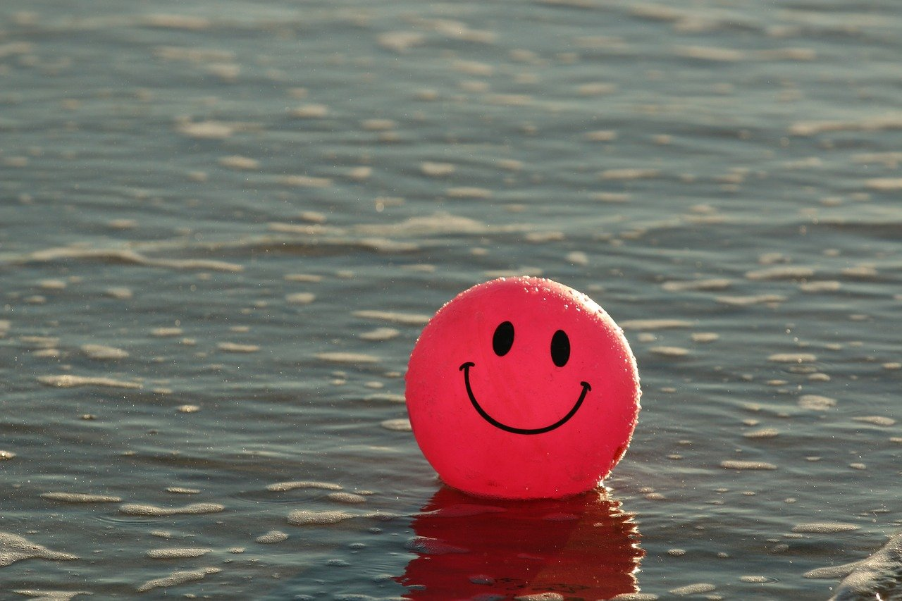
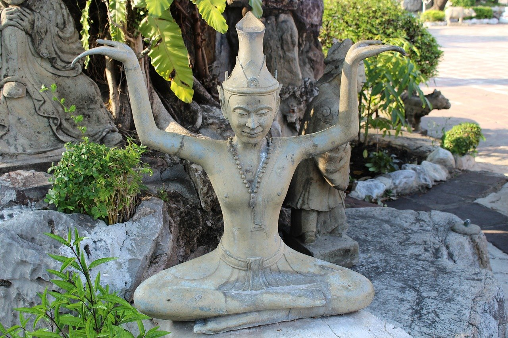
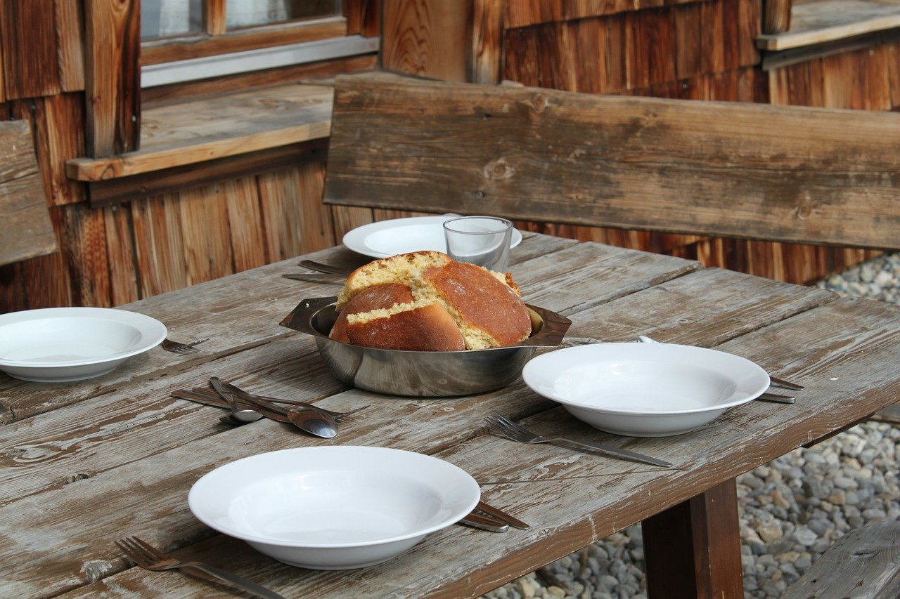

Simple living encompasses a number of different voluntary practices to simplify one's lifestyle. These may include, for example, reducing one's possessions, generally referred to as minimalism, or increasing self-sufficiency. Simple living may be characterized by individuals being satisfied with what they have rather than want.
continue readingFinding simplicity in life
July 23, 2019 | 3 comments
Why to have simple life
Adherents may choose simple living for a variety of personal reasons, such as spirituality, health, increase in quality time for family and friends, work-life balance, personal taste, financial sustainability, increase in philanthropy, frugality, environmental sustainability, or reducing stress.
continue reading

May 23, 2019 | 3 comments
Simplicity in Sprituality and Religion
Traditions of simple living stretch back to antiquity, finding resonance with leaders such as Laozi, Confucius, Zarathustra, Gautama Buddha, Jesus, and Muhammad.
continue reading

April 23, 2019 | 3 comments
Practices in Simplicity
Simple living may be characterized by individuals being satisfied with what they have rather than want. Although asceticism generally promotes living simply and refraining from luxury and indulgence, not all proponents of simple living are ascetics.
continue reading

March 23, 2019 | 3 comments